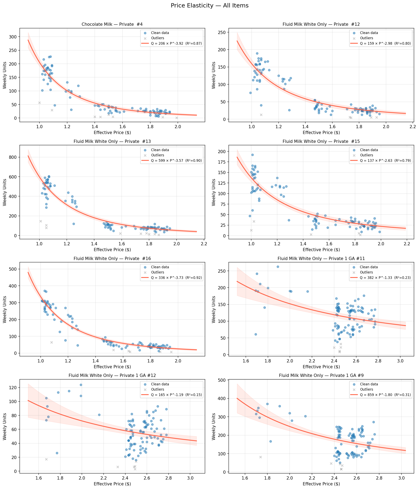

5.1 价格弹性与定价决策
关于中文版
本页是英文版 Marketing Science in Python 的AI翻译。英文版为正式版本，如有出入，以英文版为准。代码、Notebook 和图片中的文字保持英文。 阅读英文版
什么才是合适的价格？
销售团队想要更低的价格。他们离客户最近，看得到最显而易见的效应：价格一降，货就动起来了。
财务团队想要更高的利润率。从另一侧看同一个权衡，他们看得到：如果额外的销量是用过低的价格换来的，收入可以上升而利润消失。
营销处在这两种视角之间，但不是靠取平均。它的职责是把客户反应、品牌定位和商业目标连起来：什么时候追求销量或收入，什么时候保护利润，什么时候价格本身就在传递定位信号。
双方都有部分道理。价格影响销量，但销量并不总是主要目标。有时业务要的是收入，有时是利润，有时是客流或份额，甚至只是清库存或守住某个价格位置。真正缺的不是目标。缺的是理解价格变动时销量究竟变了多少。
这正是价格弹性给我们的东西。它不决定业务目标。它给出一条响应曲线，让我们能对照目标去比较各种定价决策，无论那个目标是销量、收入、利润还是定位。
什么是价格弹性？
想象你正在决定是否把一款畅销麦片的价格提高 10%。你会损失 5% 的销量，还是 20%？这个差别决定了这次调价是改善销售、收入或利润，还是只是把购物者赶走。
需求的价格弹性衡量的是销售数量对价格变动的敏感程度：
\[ \varepsilon = \frac{\% \Delta \text{Quantity}}{\% \Delta \text{Price}} \]
对正常商品而言，弹性为负：提高价格，销量减少。为简便起见，我们通常谈论它的绝对值。
- \(|\varepsilon| = 1.6\)：价格提高 10%，大约损失 16% 的销量。需求是富有弹性的。提价有风险，因为销量下降得比价格上升得更快。
- \(|\varepsilon| = 0.5\)：价格提高 10%，只损失约 5% 的销量。需求是缺乏弹性的。这个产品拥有定价权，提价可以提升收入。如果单位成本稳定且已知，提价也可能改善边际贡献。
同一个弹性估计可以支持不同的定价问题：
- 我们应该调价吗？ 富有弹性的需求让提价有风险。缺乏弹性的需求让提价更有吸引力。
- 我们应该优化哪个结果？ 弹性加上价格和销量，让我们能比较销量与收入。再加上变动成本，同一条曲线就能用来比较边际贡献。
价格弹性的数据要求
要估计价格弹性，你需要带有真实价格变动的销售数据。典型的来源是 POS 扫描数据、面板数据或内部的线上零售记录。使用实际成交价（收入除以售出数量），而不是货架标价：
\[ \text{Price}_{\text{effective}} = \frac{\text{Revenue}}{\text{Units}} \]
实际成交价比标价更可靠地反映了折扣、多件优惠和周中的价格变动。
两个设计选择奠定了基础：时间粒度和产品粒度。周通常是最好的时间粒度，因为日数据往往噪声大，而月数据会把月内的价格变动藏起来。在产品一侧，从 SKU 层级开始。单个 SKU 只有一种包装规格、一个基线价格和一种需求响应，所以价格信号更容易读。
拟合任何模型之前要检查三件事：
- 分析单元。 默认使用 SKU × 周。如果 SKU × 周太稀疏，有两种站得住脚的聚合方式。当价格变动不太频繁、月度变动仍然可见时，改用 SKU × 月。或者把真正可比的 SKU 合并起来，改用 SKU 组 × 周，比如颜色变体、口味变体，或者购物者角色相同的同价商品。不要仅仅因为产品属于同一品牌就聚合。
- 价格变动。 你需要若干个不同的价格点，没有哪一个价格主导整段历史，并且有足够长的时间把价格响应和噪声区分开。粗略的经验法则是：至少三个价格点、10% 的价格跨度和 26 周的历史。
- 失真的需求信号。 缺货、异常促销、节假日和一次性事件都会让销量因为与价格无关的原因而变动。在把这种关系当作正常的价格响应之前，先标记或剔除这些观测。
估计需求曲线
主力模型是恒定弹性模型，也叫幂律模型：
\[ Q = b_0 \times P^{b_1} \]
其中 \(Q\) 是数量，\(P\) 是价格，\(b_0\) 是尺度参数，\(b_1\) 是弹性。对正常商品而言，\(b_1\) 为负。取对数后得到线性关系 \(\log Q = \log b_0 + b_1 \log P\)，所以 \(b_1\) 是对数-对数空间中的斜率。该模型假设弹性在整个价格区间内恒定。这是一个很强的假设，但对许多消费品来说是合理的起点。
用 scipy.optimize.curve_fit 在原始的、非对数的空间中拟合曲线，以避免在对数空间拟合再换算回来所带来的逆变换偏差。
import numpy as np
from scipy.optimize import curve_fit
def power_model(price, b0, b1):
"""Q = b0 * Price^b1"""
return b0 * np.power(price, b1)
p0 = [df["units"].mean(), -1.5]
popt, pcov = curve_fit(
power_model,
df["price"].values,
df["units"].values,
p0=p0,
maxfev=10000,
)
b0, b1 = popt
print(f"Scale (b0): {b0:.1f}")
print(f"Elasticity (b1): {b1:.2f}")配套 Notebook 还运行了一个两轮估计：先在全部数据上拟合一次，标记实际销量除以预测销量落在合理区间（比如 0.3 到 3.0）之外的观测，然后剔除它们重新拟合。
# Pass 1: fit on all data
popt_1, _ = curve_fit(power_model, prices, units, p0=p0, maxfev=10000)
# Identify outliers
predicted = power_model(prices, *popt_1)
ratio = units / predicted
mask = (ratio > 0.3) & (ratio < 3.0)
# Pass 2: refit on clean data
popt_2, pcov_2 = curve_fit(
power_model, prices[mask], units[mask], p0=popt_1, maxfev=10000
)促销尖峰是常见的罪魁祸首。不加分辨地把它们包括进来，模型就会把促销销量当作正常的价格响应，使弹性偏离其真实值。

在八款最畅销的液态奶（Fluid Milk）商品中，弹性从加仑装的 \(-1.2\)（一种弹性较低的主食型规格）到小规格的 \(-3.9\)（更容易被替代）不等。图 2 并排展示了拟合曲线。

在实践中，弹性落在 \(-0.5\) 到 \(-5\) 之间、\(R^2 > 0.4\)、并且有若干个不同价格点的估计，可以用于定价决策。落在这个范围之外的估计往往是数据问题：价格点太少、单次促销折扣主导了拟合，或者时间窗口太短。如果弹性不可信，建立在它之上的任何定价建议也都不可信。
以边际贡献为目标优化
有了需求曲线，我们就可以提出不同的定价问题。
第一个问题是哪个价格使收入最大化：
\[ \text{Revenue}(P) = P \times Q(P) \]
这往往是最直观的起点，因为它只需要价格和销量。但在恒定弹性曲线下，收入最大化是退化的：当需求富有弹性时（\(|b_1| > 1\)，本章每个产品都是如此），收入随着价格下降持续上升，所以收入最大化的价格不过是你愿意设定的最低价。如果没有可靠的变动成本，收入仍可以作为初筛指标，但要把它当作一个方向（降价），而不是一个内部最优点。
但收入不是利润。如果有变动成本，我们可以问一个更有力的问题：哪个价格使边际贡献最大化？
\[ \text{Contribution Margin}(P) = (P - C) \times Q(P) \]
其中 \(C\) 是单位变动成本，\(Q(P) = b_0 \times P^{b_1}\)。
两个答案可能不同。更低的价格可以卖出更多销量、增加收入，同时减少总利润。更高的价格可以减少收入，但如果剩下的销量足够赚钱，就能改善利润。重点不在于利润永远是唯一目标。重点在于选价之前必须把目标说清楚。
实例：一款自有品牌麦片
取一款自有品牌麦片，参数如下：
- 当前价格：$3.99
- 变动成本：$2.20
- 当前销量：每周 1,500 件
- 估计弹性：\(b_1 = -1.6\)
| 价格 | 销量 | 收入 | 单位利润 | 总利润 |
|---|---|---|---|---|
| $3.59（低 10%） | 1,776 | $6,376 | $1.39 | $2,469 |
| $3.99（当前） | 1,500 | $5,985 | $1.79 | $2,685 |
| $4.39（高 10%） | 1,288 | $5,654 | $2.19 | $2,821 |
| $4.79（高 20%） | 1,121 | $5,369 | $2.59 | $2,903 |
这张表展示了核心的权衡。在这个区间内，收入在最低价处最高，而在恒定弹性下，每再降一次价，收入都会继续攀升。利润的表现不同：它在 \(P^* = C \cdot |b_1| / (|b_1| - 1)\) 处有一个内部最优点，对这组参数来说约为 $5.87，这就是为什么在表的最高价处总利润仍在上升，达到 $2,903。提价 10% 时，收入下降 5.5%，而利润上升 5.1%。收入和利润指向相反的方向。这就是折扣陷阱：折扣推高了收入，同时侵蚀了总边际贡献。
图 3 用五款真实的 Dunnhumby 产品展示了同样的逻辑。在每个面板中，收入都随着价格下降持续攀升，而边际贡献在某个内部价格处转向，所以两个目标确实指向不同的决策。对这些弹性很高的自有品牌乳制品来说，利润最大化的价格始终低于当前价格，因为降价带来的额外销量足以推高总利润。同一个公式，相反的方向：决定翻转的是那个内部最优点落在今天价格的上方还是下方，而这由弹性和成本比率共同决定。

优化本身是一个一维搜索。对负利润函数运行 scipy.optimize.minimize_scalar，几行代码就能完成，配套 Notebook 会逐步演示。
from scipy.optimize import minimize_scalar
def neg_margin(price, b0, b1, variable_cost):
"""Negative contribution margin (for minimization)."""
quantity = b0 * price ** b1
return -(price - variable_cost) * quantity
result = minimize_scalar(
neg_margin,
bounds=(2.50, 6.00),
method="bounded",
args=(b0_fitted, b1_fitted, 2.20),
)
optimal_price = result.x
optimal_margin = -result.fun
print(f"Optimal price: ${optimal_price:.2f}")
print(f"Max weekly margin: ${optimal_margin:,.0f}")有一条注意事项来自恒定弹性假设：只有当需求富有弹性（\(|b_1| > 1\)）时，利润曲线才有那个内部最优点。对缺乏弹性的商品，模型意味着利润随价格持续上升，于是有界优化器只会返回上界：这是一个重新检查拟合的信号，而不是一个可以设定的价格。因此配套 Notebook 只对判定为可用且 \(b_1 < -1\) 的商品进行优化。
配套 Notebook： sec5.1_price_elasticity.ipynb 涵盖数据加载、质量检查、两轮弹性估计和敏感性表。
在 GitHub 上查看
弹性因产品角色而异
同一个品类可以包含购物者角色截然不同的产品。在液态奶产品中，一加仑白牛奶、一份单人装巧克力牛奶和一夸脱咖啡奶精并不是可以互换的定价决策。它们可能属于同一个大商品类别，但购物者为不同的场合购买它们，并拿它们与不同的替代品比较。
这就是为什么 SKU 层级的估计只应聚合到可比的 SKU 组中，比如同一个子商品类别。目标不是创建尽可能多的细分群体。目标是避免把价格响应本应不同的产品平均在一起。

在对整个品类套用同一条定价规则之前，先检查主要的产品角色是否响应不同。如果不同，平均弹性就不是一条定价规则。它是一个警告：这个品类需要更仔细地拆分。
价格弹性的常见陷阱
内生性。 价格不是随机设定的。如果零售商在返校季这类高需求时期提价，观测到的弹性会偏向零，因为高价格和高需求出于与定价无关的原因同时出现。这与第 3 部分的选择偏差是同一个问题。用工具变量、随机化价格实验或准实验设计来应对。
共享的时间结构。 价格和销量都带有季节性、促销日历和趋势，所以在原始周序列上做回归可能捕捉到的是这种共享结构，而不是价格响应。两个仅仅共享同一份日历的序列，相关性就可能强到看起来像一条需求曲线。把日历放进模型：周或月指示变量、促销标记和趋势项，这样价格系数是在控制它们的情况下估计的，而不是透过它们估计的。本章的双变量拟合没有做这些，所以在带日历的设定给出一致结果之前，把它的弹性当作暴露于这种偏差之下。
参考价格效应。 顾客记得自己之前付过多少钱。提价引起的销量下降通常大于降价带来的新买家。JCPenney 的“Fair and Square”案例是著名的例子：在平均价格水平不变的情况下从促销转向天天低价，导致销售崩溃，因为顾客失去了价格锚点。
竞争对手的反应。 降价只有在竞争对手按兵不动时才有效。在集中度高的品类中，竞争对手通常会跟进。每家卖的量都差不多，但利润率更低了。在那里，博弈论比需求曲线更重要。
要点
- 弹性给出响应曲线，但不选择目标。要决定你优化的是销量、收入还是边际贡献。在恒定弹性拟合下，只有富有弹性的需求才让利润有一个内部最优点。
- 在决策所用的粒度上拟合，默认是 SKU 按周，并在到处套用同一条定价规则之前检查产品角色是否响应不同。
- 估计出的弹性是一个观测性结果，不是产品的普遍属性。内生性、促销和缺货都可能让价格响应曲线看起来比实际更可靠。